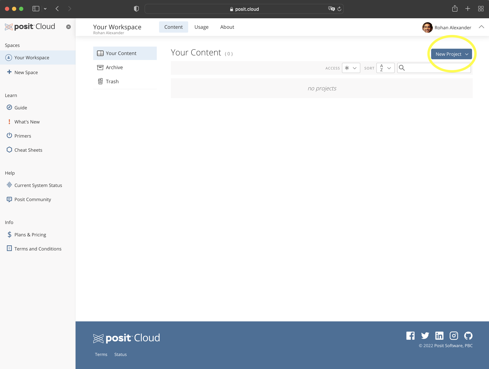
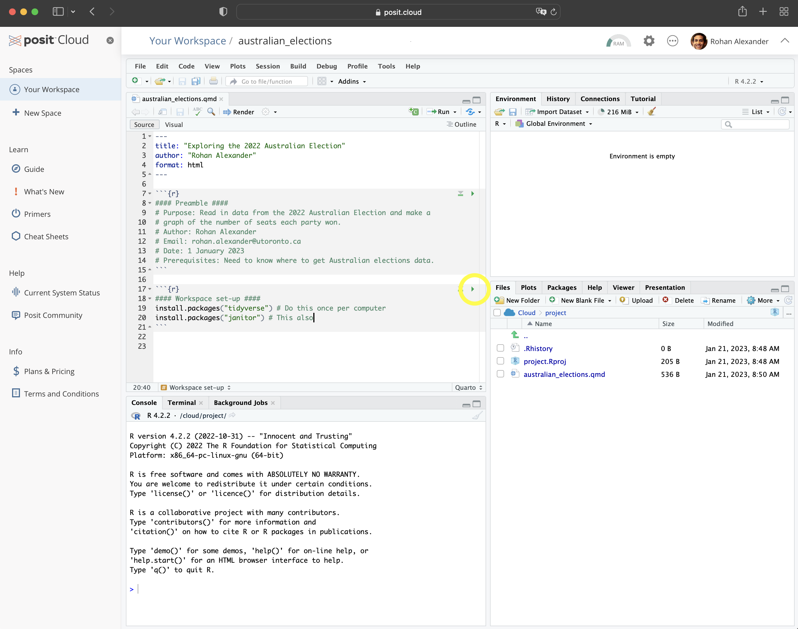
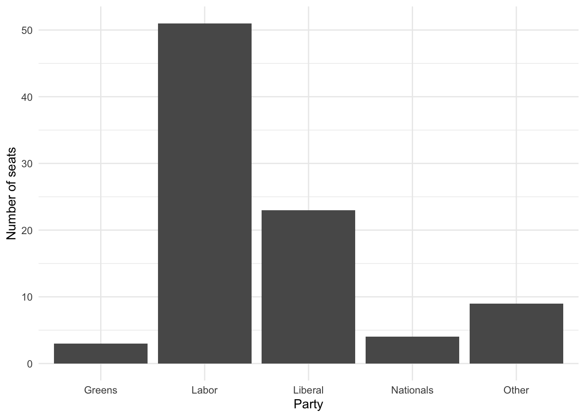
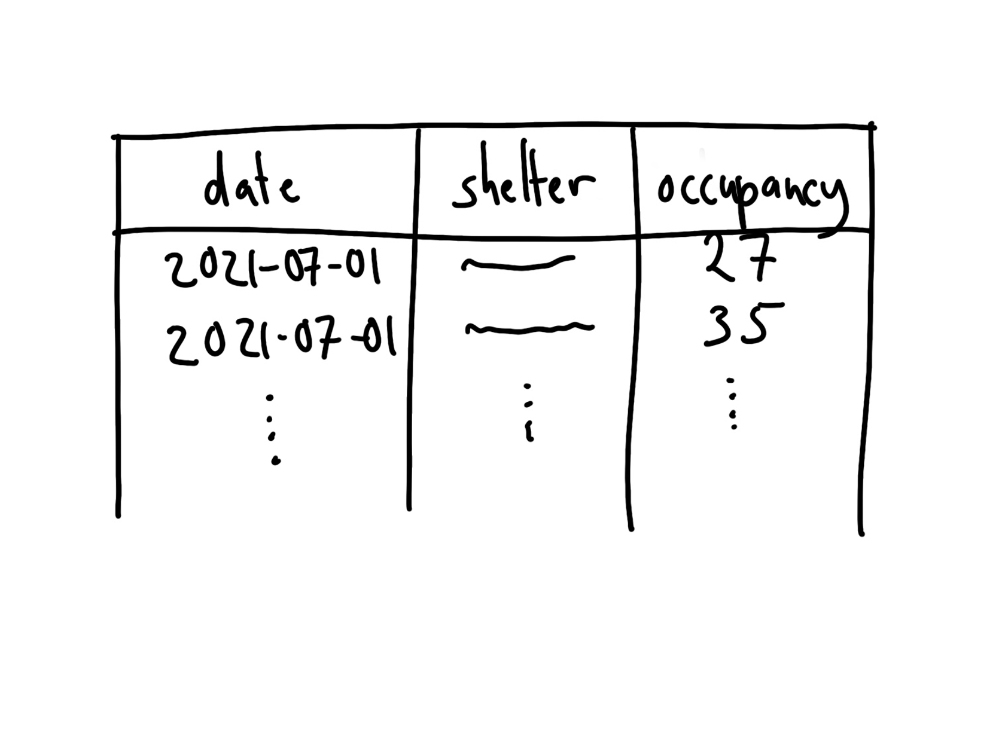
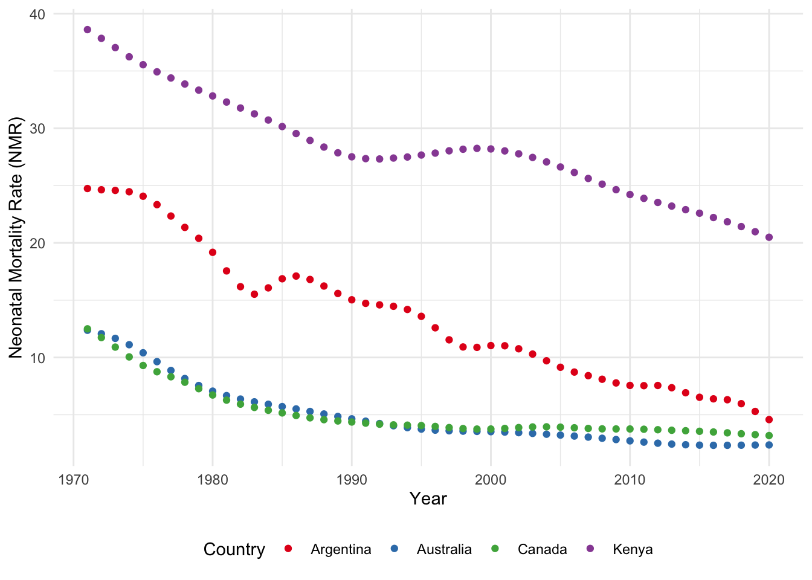

library("janitor")
library("knitr")
library("lubridate")
library("opendatatoronto")
library("tidyverse")2 Drinking from a fire hose
Prerequisites
- Read The mundanity of excellence: An ethnographic report on stratification and Olympic swimmers, (Chambliss 1989)
- This paper finds that excellence is not due to some special talent or gift, but instead due to technique, discipline, and attitude.
- Read Data science as an atomic habit, (Barrett 2021)
- This blog post describes an approach to learning data science that involves making small, consistent, actions.
- Read This is how AI bias really happens—and why it’s so hard to fix, (Hao 2019)
- This article highlights some of the ways in which models can perpetuate bias.
Key concepts and skills
- The statistical programming language R enables us to tell interesting stories using data. It is a language like any other, and the path to mastery can be slow.
- The workflow that we use to approach projects is: plan, simulate, acquire, explore, and share.
- The way to learn R is to start with a small project and break down what is required to achieve it into tiny steps, look at other people’s code, and draw on that to achieve each step. Complete that project and move onto the next project. With each project you will get a little better.
Software and packages
- Base R (R Core Team 2023)
- Core
tidyverse(Wickham et al. 2019)dplyr(Wickham et al. 2022)ggplot2(Wickham 2016)tidyr(Wickham, Vaughan, and Girlich 2023)stringr(Wickham 2022)readr(Wickham, Hester, and Bryan 2022)
janitor(Firke 2023)knitr(Xie 2023)lubridate(Grolemund and Wickham 2011)opendatatoronto(Gelfand 2022)
2.1 Hello, World!
The way to start, is to start. In this chapter we go through three complete examples of the data science workflow advocated in this book. This means we:
\[ \mbox{Plan} \rightarrow \mbox{Simulate} \rightarrow \mbox{Acquire} \rightarrow \mbox{Explore} \rightarrow \mbox{Share} \] If you are new to R, then some of the code may be a bit unfamiliar to you. If you are new to statistics, then some of the concepts may be unfamiliar. Do not worry. It will all soon become familiar.
The only way to learn how to tell stories, is to start telling stories yourself. This means that you should try to get these examples working. Do the sketches yourself, type everything out yourself (using Posit Cloud if you are new to R and do not have it locally installed), and execute it all. It is important to realize that it will be challenging at the start. This is normal.
Whenever you’re learning a new tool, for a long time, you’re going to suck\(\dots\) But the good news is that is typical; that’s something that happens to everyone, and it’s only temporary.
Hadley Wickham as quoted by Barrett (2021).
You will be guided thoroughly here. Hopefully by experiencing the excitement of telling stories with data, you will feel empowered to stick with it.
The first step of the workflow is to plan. We do this because we need to establish an end-point, even if we later need to update it as we learn more about the situation. We then simulate because this forces us into the details of our plan. In some projects, data acquisition may be as straight-forward as downloading a dataset, but in others the data acquisition may be much of the focus, for instance, if we conduct a survey. We explore the data using various quantitative methods to come to understand it. And finally, we share our understanding, in a way that is focused on the needs of our audience.
To get started, go to Posit Cloud and create an account; the free version is fine for now. We use that initially, rather than the desktop, so that getting started is the same for everyone, but to avoid having to pay you should change to a local installation later. Once you have an account and log in, it should look something like Figure 2.1 (a).


You will be in “Your Projects”. From here you should start a new project: “New Project” \(\rightarrow\) “New RStudio Project” (Figure 2.1 (b)). You can give the project a name by clicking on “Untitled Project” and replacing it.
We will now go through three worked examples: Australian elections, Toronto shelter usage, and neonatal mortality. These examples build increasing complexity, but from the first one, we will be telling a story with data. While we briefly explain many aspects here, almost everything is explained in much more detail in the rest of the book.
2.2 Australian elections
Australia is a parliamentary democracy with 151 seats in the House of Representatives, which is the lower house and that from which government is formed. There are two major parties—“Liberal” and “Labor”—two minor parties—“Nationals” and “Greens”—and many smaller parties and independents. In this example we will create a graph of the number of seats that each party won in the 2022 Federal Election.
2.2.1 Plan
For this example, we need to plan two aspects. The first is what the dataset that we need will look like, and the second is what the final graph will look like.
The basic requirement for the dataset is that it has the name of the seat (sometimes called a “division” in Australia) and the party of the person elected. A quick sketch of the dataset that we would need is Figure 2.2 (a).


We also need to plan the graph that we are interested in. Given we want to display the number of seats that each party won, a quick sketch of what we might aim for is Figure 2.2 (b).
2.2.2 Simulate
We now simulate some data, to bring some specificity to our sketches.
To get started, within Posit Cloud, make a new Quarto document: “File” \(\rightarrow\) “New File” \(\rightarrow\) “Quarto document\(\dots\)”. Give it a title, such as “Exploring the 2022 Australian Election”, add your name as author, and unclick “Use visual markdown editor” (Figure 2.3 (a)). Leave the other options as their default, and then click “Create”.





You may get a notification along the lines of “Package rmarkdown required\(\dots\).” (Figure 2.3 (b)). If that happens, click “Install”. For this example, we will put everything into this one Quarto document. You should save it as “australian_elections.qmd”: “File” \(\rightarrow\) “Save As\(\dots\)”.
Remove almost all the default content, and then beneath the heading material create a new R code chunk: “Code” \(\rightarrow\) “Insert Chunk”. Then add preamble documentation that explains:
- the purpose of the document;
- the author and contact details;
- when the file was written or last updated; and
- prerequisites that the file relies on.
#### Preamble ####
# Purpose: Read in data from the 2022 Australian Election and make
# a graph of the number of seats each party won.
# Author: Rohan Alexander
# Email: rohan.alexander@utoronto.ca
# Date: 1 January 2023
# Prerequisites: Know where to get Australian elections data.In R, lines that start with “#” are comments. This means that they are not run as code by R, but are instead designed to be read by humans. Each line of this preamble should start with a “#”. Also make it clear that this is the preamble section by surrounding that with “####”. The result should look like Figure 2.3 (c).
After this we need to setup the workspace. This involves installing and loading any packages that will be needed. A package only needs to be installed once for each computer, but needs to be loaded each time it is to be used. In this case we are going to use the tidyverse and janitor packages. They will need to be installed because this is the first time they are being used, and then each will need to be loaded.
Shoulders of giants
Hadley Wickham is Chief Scientist at RStudio. After earning a PhD in Statistics from Iowa State University in 2008 he was appointed as an assistant professor at Rice University, and became Chief Scientist at RStudio, now Posit, in 2013. He developed the tidyverse collection of packages, and has published many books including R for Data Science (Wickham, Çetinkaya-Rundel, and Grolemund [2016] 2023) and Advanced R (Wickham 2019). He was awarded the COPSS Presidents’ Award in 2019.
An example of installing the packages follows. Run this code by clicking the small green arrow associated with the R code chunk (Figure 2.3 (d)).
#### Workspace setup ####
install.packages("tidyverse")
install.packages("janitor")Now that the packages are installed, they need to be loaded. As that package installation step only needs to be done once per computer, that code can be commented out so that it is not accidentally run, or even just removed. Additionally, we can remove the message that printed when we installed the packages (Figure 2.3 (e)).
#### Workspace setup ####
# install.packages("tidyverse")
# install.packages("janitor")
library(tidyverse)
library(janitor)We can render the entire document by clicking “Render” (Figure 2.3 (f)). When you do this, you may be asked to install some packages. If that happens, then you should agree to this. This will result in a HTML document.
For an introduction to the packages that were just installed, each package contains a help file that provides information about them and their functions. It can be accessed by prepending a question mark to the package name and then running that code in the console. For instance ?tidyverse.
To simulate our data, we need to create a dataset with two variables: “Division” and “Party”, and some values for each. In the case of “Division” reasonable values would be a name of one of the 151 Australian divisions. In the case of “Party” reasonable values would be one of the following five: “Liberal”, “Labor”, “National”, “Green”, or “Other”. Again, this code can be run by clicking the small green arrow associated with the R code chunk.
simulated_data <-
tibble(
# Use 1 through to 151 to represent each division
"Division" = 1:151,
# Randomly pick an option, with replacement, 151 times
"Party" = sample(
x = c("Liberal", "Labor", "National", "Green", "Other"),
size = 151,
replace = TRUE
)
)
simulated_data# A tibble: 151 × 2
Division Party
<int> <chr>
1 1 Liberal
2 2 Other
3 3 Labor
4 4 Labor
5 5 National
6 6 National
7 7 Green
8 8 Other
9 9 Labor
10 10 Labor
# ℹ 141 more rowsAt a certain point, your code will not run and you will want to ask others for help. Do not take a screenshot of a small snippet of the code and expect that someone will be able to help based on that. They, almost surely, cannot. Instead, you need to provide them with your whole script in a way that they can run. We will explain what GitHub is more completely in Chapter 3, but for now, if you need help, then you should naively create a GitHub Gist which will enable you to share your code in a way that is more helpful than taking a screenshot. The first step is to create a free account on GitHub (Figure 2.4 (a)). Thinking about an appropriate username is important because this will become part of your professional profile. It would make sense to have a username that is professional, independent of any course, and ideally related to your real name. Then look for a “+” in the top right, and select “New gist” (Figure 2.4 (b)).


From here you should add all the code to that Gist, not just the final bit that is giving an error. And give it a meaningful filename that includes “.R” at the end, for instance, “australian_elections.R”. In Figure 2.4 (c) it will turn out that we have incorrect capitalization, library(Tidyverse) instead of library(tidyverse).
Click “Create public gist”. We can then share the URL to this Gist with whoever we are asking to help, explain what the problem is, and what we are trying to achieve. It will be easier for them to help, because all the code is available.
2.2.3 Acquire
Now we want to get the actual data. The data we need is from the Australian Electoral Commission (AEC), which is the non-partisan agency that organizes Australian federal elections. We can pass a page of their website to read_csv() from readr. We do not need to explicitly load readr because it is part of the tidyverse. The <- or “assignment operator” allocates the output of read_csv() to an object called “raw_elections_data”.
#### Read in the data ####
raw_elections_data <-
read_csv(
file =
"https://results.aec.gov.au/27966/website/Downloads/HouseMembersElectedDownload-27966.csv",
show_col_types = FALSE,
skip = 1
)
# We have read the data from the AEC website. We may like to save
# it in case something happens or they move it.
write_csv(
x = raw_elections_data,
file = "australian_voting.csv"
)We can take a quick look at the dataset using head() which will show the first six rows, and tail() which will show the last six rows.
head(raw_elections_data)# A tibble: 6 × 8
DivisionID DivisionNm StateAb CandidateID GivenNm Surname PartyNm PartyAb
<dbl> <chr> <chr> <dbl> <chr> <chr> <chr> <chr>
1 179 Adelaide SA 36973 Steve GEORGANAS Austral… ALP
2 197 Aston VIC 36704 Alan TUDGE Liberal LP
3 198 Ballarat VIC 36409 Catherine KING Austral… ALP
4 103 Banks NSW 37018 David COLEMAN Liberal LP
5 180 Barker SA 37083 Tony PASIN Liberal LP
6 104 Barton NSW 36820 Linda BURNEY Austral… ALP tail(raw_elections_data)# A tibble: 6 × 8
DivisionID DivisionNm StateAb CandidateID GivenNm Surname PartyNm PartyAb
<dbl> <chr> <chr> <dbl> <chr> <chr> <chr> <chr>
1 152 Wentworth NSW 37451 Allegra SPENDER Indepen… IND
2 153 Werriwa NSW 36810 Anne Maree STANLEY Austral… ALP
3 150 Whitlam NSW 36811 Stephen JONES Austral… ALP
4 178 Wide Bay QLD 37506 Llew O'BRIEN Liberal… LNP
5 234 Wills VIC 36452 Peter KHALIL Austral… ALP
6 316 Wright QLD 37500 Scott BUCHHOLZ Liberal… LNP We need to clean the data so that we can use it. We are trying to make it similar to the dataset that we thought we wanted in the planning stage. While it is fine to move away from the plan, this needs to be a deliberate, reasoned decision. After reading in the dataset that we saved, the first thing that we will do is adjust the names of the variables. We will do this using clean_names() from janitor.
#### Basic cleaning ####
raw_elections_data <-
read_csv(
file = "australian_voting.csv",
show_col_types = FALSE
)# Make the names easier to type
cleaned_elections_data <-
clean_names(raw_elections_data)
# Have a look at the first six rows
head(cleaned_elections_data)# A tibble: 6 × 8
division_id division_nm state_ab candidate_id given_nm surname party_nm
<dbl> <chr> <chr> <dbl> <chr> <chr> <chr>
1 179 Adelaide SA 36973 Steve GEORGANAS Australian …
2 197 Aston VIC 36704 Alan TUDGE Liberal
3 198 Ballarat VIC 36409 Catherine KING Australian …
4 103 Banks NSW 37018 David COLEMAN Liberal
5 180 Barker SA 37083 Tony PASIN Liberal
6 104 Barton NSW 36820 Linda BURNEY Australian …
# ℹ 1 more variable: party_ab <chr>The names are faster to type because RStudio will auto-complete them. To do this, we begin typing the name of a variable and then use the “tab” key to complete it.
There are many variables in the dataset, and we are primarily interested in two: “division_nm” and “party_nm”. We can choose certain variables of interest with select() from dplyr which we loaded as part of the tidyverse. The “pipe operator”, |>, pushes the output of one line to be the first input of the function on the next line.
cleaned_elections_data <-
cleaned_elections_data |>
select(
division_nm,
party_nm
)
head(cleaned_elections_data)# A tibble: 6 × 2
division_nm party_nm
<chr> <chr>
1 Adelaide Australian Labor Party
2 Aston Liberal
3 Ballarat Australian Labor Party
4 Banks Liberal
5 Barker Liberal
6 Barton Australian Labor PartySome of the variable names are still not obvious because they are abbreviated. We can look at the names of the columns in this dataset with names(). And we can change the names using rename() from dplyr.
names(cleaned_elections_data)[1] "division_nm" "party_nm" cleaned_elections_data <-
cleaned_elections_data |>
rename(
division = division_nm,
elected_party = party_nm
)
head(cleaned_elections_data)# A tibble: 6 × 2
division elected_party
<chr> <chr>
1 Adelaide Australian Labor Party
2 Aston Liberal
3 Ballarat Australian Labor Party
4 Banks Liberal
5 Barker Liberal
6 Barton Australian Labor PartyWe could now look at the unique values in the “elected_party” column using unique().
cleaned_elections_data$elected_party |>
unique()[1] "Australian Labor Party"
[2] "Liberal"
[3] "Liberal National Party of Queensland"
[4] "The Greens"
[5] "The Nationals"
[6] "Independent"
[7] "Katter's Australian Party (KAP)"
[8] "Centre Alliance" As there is more detail in this than we wanted, we may want to simplify the party names to match what we simulated, using case_match() from dplyr.
cleaned_elections_data <-
cleaned_elections_data |>
mutate(
elected_party =
case_match(
elected_party,
"Australian Labor Party" ~ "Labor",
"Liberal National Party of Queensland" ~ "Liberal",
"Liberal" ~ "Liberal",
"The Nationals" ~ "Nationals",
"The Greens" ~ "Greens",
"Independent" ~ "Other",
"Katter's Australian Party (KAP)" ~ "Other",
"Centre Alliance" ~ "Other"
)
)
head(cleaned_elections_data)# A tibble: 6 × 2
division elected_party
<chr> <chr>
1 Adelaide Labor
2 Aston Liberal
3 Ballarat Labor
4 Banks Liberal
5 Barker Liberal
6 Barton Labor Our data now matches our plan (Figure 2.2 (a)). For every electoral division we have the party of the person that won it.
Having now nicely cleaned the dataset, we should save it, so that we can start with that cleaned dataset in the next stage. We should make sure to save it under a new file name so we are not replacing the raw data, and so that it is easy to identify the cleaned dataset later.
write_csv(
x = cleaned_elections_data,
file = "cleaned_elections_data.csv"
)2.2.4 Explore
We may like to explore the dataset that we created. One way to better understand a dataset is to make a graph. In particular, here we would like to build the graph that we planned in Figure 2.2 (b).
First, we read in the dataset that we just created.
#### Read in the data ####
cleaned_elections_data <-
read_csv(
file = "cleaned_elections_data.csv",
show_col_types = FALSE
)We can get a quick count of how many seats each party won using count() from dplyr.
cleaned_elections_data |>
count(elected_party)# A tibble: 5 × 2
elected_party n
<chr> <int>
1 Greens 4
2 Labor 77
3 Liberal 48
4 Nationals 10
5 Other 12To build the graph that we are interested in, we use ggplot2 which is part of the tidyverse. The key aspect of this package is that we build graphs by adding layers using “+”, which we call the “add operator”. In particular we will create a bar chart using geom_bar() from ggplot2 (Figure 2.5 (a)).
cleaned_elections_data |>
ggplot(aes(x = elected_party)) + # aes abbreviates "aesthetics"
geom_bar()
cleaned_elections_data |>
ggplot(aes(x = elected_party)) +
geom_bar() +
theme_minimal() + # Make the theme neater
labs(x = "Party", y = "Number of seats") # Make labels more meaningful

Figure 2.5 (a) accomplishes what we set out to do. But we can make it look a bit nicer by modifying the default options and improving the labels (Figure 2.5 (b)).
2.3 Toronto’s unhoused population
Toronto has a large unhoused population (City of Toronto 2021). Freezing winters mean it is important there are enough places in shelters. In this example we will make a table of shelter usage in 2021 to compare average use in each month. Our expectation is that there is greater usage in the colder months, for instance, December, compared with warmer months, for instance, July.
2.3.1 Plan
The dataset that we are interested in would need to have the date, the shelter, and the number of beds that were occupied that night. A quick sketch of a dataset that would work is Figure 2.6 (a). We are interested in creating a table that has the monthly average number of beds occupied each night. The table would probably look something like Figure 2.6 (b).


2.3.2 Simulate
The next step is to simulate some data that could resemble our dataset. Simulation provides us with an opportunity to think deeply about our data generating process.
In Posit Cloud make a new Quarto document, save it, and make a new R code chunk and add preamble documentation. Then install and/or load the packages that are needed. We will again use the tidyverse and janitor. As those were installed earlier, they do not need to be installed again. We will also use lubridate. That is part of the tidyverse and so does not need to be installed independently, but it does need to be loaded. We will also use opendatatoronto, and knitr and these will need to be installed and loaded.
#### Preamble ####
# Purpose: Get data on 2021 shelter usage and make table
# Author: Rohan Alexander
# Email: rohan.alexander@utoronto.ca
# Date: 1 July 2022
# Prerequisites: -
#### Workspace setup ####
install.packages("opendatatoronto")
install.packages("knitr")
library(knitr)
library(janitor)
library(lubridate)
library(opendatatoronto)
library(tidyverse)To add a bit more detail to the earlier example, packages contain code that other people have written. There are a few common ones that you will see regularly in this book, especially the tidyverse. To use a package, we must first install it and then we need to load it. A package only needs to be installed once per computer but must be loaded every time. This means the packages that we installed earlier do not need to be reinstalled here.
Shoulders of giants
Dr Robert Gentleman is a co-creator of R. After earning a PhD in Statistics from the University of Washington in 1988, he moved to the University of Auckland. He then went onto various roles including at 23andMe and is now the Executive Director of the Center for Computational Biomedicine at Harvard Medical School.
Shoulders of giants
Dr Ross Ihaka is a co-creator of R. He earned a PhD in Statistics from the University of California, Berkeley, in 1985. He wrote a dissertation titled “Ruaumoko”, which is the Māori god of earthquakes. He then moved to the University of Auckland where he remained for his entire career. He was awarded the Pickering Medal in 2008 by the Royal Society of New Zealand Te Apārangi.
Given that people donate their time to make R and the packages that we use, it is important to cite them. To get the information that is needed, we use citation(). When run without any arguments, that provides the citation information for R itself, and when run with an argument that is the name of a package, it provides the citation information for that package.
citation() # Get the citation information for RTo cite R in publications use:
R Core Team (2023). _R: A Language and Environment for Statistical
Computing_. R Foundation for Statistical Computing, Vienna, Austria.
<https://www.R-project.org/>.
A BibTeX entry for LaTeX users is
@Manual{,
title = {R: A Language and Environment for Statistical Computing},
author = {{R Core Team}},
organization = {R Foundation for Statistical Computing},
address = {Vienna, Austria},
year = {2023},
url = {https://www.R-project.org/},
}
We have invested a lot of time and effort in creating R, please cite it
when using it for data analysis. See also 'citation("pkgname")' for
citing R packages.citation("ggplot2") # Get citation information for a packageTo cite ggplot2 in publications, please use
H. Wickham. ggplot2: Elegant Graphics for Data Analysis.
Springer-Verlag New York, 2016.
A BibTeX entry for LaTeX users is
@Book{,
author = {Hadley Wickham},
title = {ggplot2: Elegant Graphics for Data Analysis},
publisher = {Springer-Verlag New York},
year = {2016},
isbn = {978-3-319-24277-4},
url = {https://ggplot2.tidyverse.org},
}Turning to the simulation, we need three variables: “date”, “shelter”, and “occupancy”. This example will build on the earlier one by adding a seed using set.seed(). A seed enables us to always generate the same random data whenever we run the same code. Any integer can be used as the seed. In this case the seed will be 853. If you use that as your seed, then you should get the same random numbers as in this example. If you use a different seed, then you should expect different random numbers. Finally, we use rep() to repeat something a certain number of times. For instance, we repeat “Shelter 1” 365 times which accounts for about a year.
#### Simulate ####
set.seed(853)
simulated_occupancy_data <-
tibble(
date = rep(x = as.Date("2021-01-01") + c(0:364), times = 3),
# Based on Eddelbuettel: https://stackoverflow.com/a/21502386
shelter = c(
rep(x = "Shelter 1", times = 365),
rep(x = "Shelter 2", times = 365),
rep(x = "Shelter 3", times = 365)
),
number_occupied =
rpois(
n = 365 * 3,
lambda = 30
) # Draw 1,095 times from the Poisson distribution
)
head(simulated_occupancy_data)# A tibble: 6 × 3
date shelter number_occupied
<date> <chr> <int>
1 2021-01-01 Shelter 1 28
2 2021-01-02 Shelter 1 29
3 2021-01-03 Shelter 1 35
4 2021-01-04 Shelter 1 25
5 2021-01-05 Shelter 1 21
6 2021-01-06 Shelter 1 30In this simulation we first create a list of all the dates in 2021. We repeat that list three times. We assume data for three shelters for every day of the year. To simulate the number of beds that are occupied each night, we draw from a Poisson distribution, assuming a mean number of 30 beds occupied per shelter, although this is just an arbitrary choice. By way of background, a Poisson distribution is often used when we have count data, and we return to it in Chapter 13.
2.3.3 Acquire
We use data made available about Toronto shelter usage by the City of Toronto. Shelter usage is measured by a count made each night at 4 a.m. of the number of occupied beds. To access the data, we use opendatatoronto and then save our own copy.
#### Acquire ####
toronto_shelters <-
# Each package is associated with a unique id found in the "For
# Developers" tab of the relevant page from Open Data Toronto
# https://open.toronto.ca/dataset/daily-shelter-overnight-service-occupancy-capacity/
list_package_resources("21c83b32-d5a8-4106-a54f-010dbe49f6f2") |>
# Within that package, we are interested in the 2021 dataset
filter(name ==
"daily-shelter-overnight-service-occupancy-capacity-2021.csv") |>
# Having reduced the dataset to one row we can get the resource
get_resource()
write_csv(
x = toronto_shelters,
file = "toronto_shelters.csv"
)
head(toronto_shelters)head(toronto_shelters)# A tibble: 6 × 32
X_id OCCUPANCY_DATE ORGANIZATION_ID ORGANIZATION_NAME SHELTER_ID
<dbl> <chr> <dbl> <chr> <dbl>
1 1 21-01-01 24 COSTI Immigrant Services 40
2 2 21-01-01 24 COSTI Immigrant Services 40
3 3 21-01-01 24 COSTI Immigrant Services 40
4 4 21-01-01 24 COSTI Immigrant Services 40
5 5 21-01-01 24 COSTI Immigrant Services 40
6 6 21-01-01 24 COSTI Immigrant Services 40
# ℹ 27 more variables: SHELTER_GROUP <chr>, LOCATION_ID <dbl>,
# LOCATION_NAME <chr>, LOCATION_ADDRESS <chr>, LOCATION_POSTAL_CODE <chr>,
# LOCATION_CITY <chr>, LOCATION_PROVINCE <chr>, PROGRAM_ID <dbl>,
# PROGRAM_NAME <chr>, SECTOR <chr>, PROGRAM_MODEL <chr>,
# OVERNIGHT_SERVICE_TYPE <chr>, PROGRAM_AREA <chr>, SERVICE_USER_COUNT <dbl>,
# CAPACITY_TYPE <chr>, CAPACITY_ACTUAL_BED <dbl>, CAPACITY_FUNDING_BED <dbl>,
# OCCUPIED_BEDS <dbl>, UNOCCUPIED_BEDS <dbl>, UNAVAILABLE_BEDS <dbl>, …Not much needs to be done to this to make it similar to the dataset that we were interested in (Figure 2.6 (a)). We need to change the names to make them easier to type using clean_names(), and reduce the columns to only those that are relevant using select().
toronto_shelters_clean <-
clean_names(toronto_shelters) |>
mutate(occupancy_date = ymd(occupancy_date)) |>
select(occupancy_date, occupied_beds)
head(toronto_shelters_clean)# A tibble: 6 × 2
occupancy_date occupied_beds
<date> <dbl>
1 2021-01-01 NA
2 2021-01-01 NA
3 2021-01-01 NA
4 2021-01-01 NA
5 2021-01-01 NA
6 2021-01-01 6All that remains is to save the cleaned dataset.
write_csv(
x = toronto_shelters_clean,
file = "cleaned_toronto_shelters.csv"
)2.3.4 Explore
First, we load the dataset that we just created.
#### Explore ####
toronto_shelters_clean <-
read_csv(
"cleaned_toronto_shelters.csv",
show_col_types = FALSE
)The dataset contains daily records for each shelter. We are interested in understanding average usage for each month. To do this, we need to add a month column using month() from lubridate. By default, month() provides the number of the month, and so we include two arguments—“label” and “abbr”—to get the full name of the month. We remove rows that do not have any data for the number of beds using drop_na() from tidyr, which is part of the tidyverse. We will do this here unthinkingly because our focus is on getting started, but this is an important decision and we talk more about missing data in Chapter 6 and Chapter 11. We then create a summary statistic on the basis of monthly groups, using summarise() from dplyr. We use kable() from knitr to create Table 2.1.
toronto_shelters_clean |>
mutate(occupancy_month = month(
occupancy_date,
label = TRUE,
abbr = FALSE
)) |>
arrange(month(occupancy_date)) |>
drop_na(occupied_beds) |>
summarise(number_occupied = mean(occupied_beds),
.by = occupancy_month) |>
kable()| occupancy_month | number_occupied |
|---|---|
| January | 28.55708 |
| February | 27.73821 |
| March | 27.18521 |
| April | 26.31561 |
| May | 27.42596 |
| June | 28.88300 |
| July | 29.67137 |
| August | 30.83975 |
| September | 31.65405 |
| October | 32.32991 |
| November | 33.26980 |
| December | 33.52426 |
As with before, this looks fine, and achieves what we set out to do. But we can make some tweaks to the defaults to make it look even better (Table 2.2). In particular we make the column names easier to read, and only show an appropriate number of decimal places.
toronto_shelters_clean |>
mutate(occupancy_month = month(
occupancy_date,
label = TRUE,
abbr = FALSE
)) |>
arrange(month(occupancy_date)) |>
drop_na(occupied_beds) |>
summarise(number_occupied = mean(occupied_beds),
.by = occupancy_month) |>
kable(
col.names = c("Month", "Average daily number of occupied beds"),
digits = 1
)| Month | Average daily number of occupied beds |
|---|---|
| January | 28.6 |
| February | 27.7 |
| March | 27.2 |
| April | 26.3 |
| May | 27.4 |
| June | 28.9 |
| July | 29.7 |
| August | 30.8 |
| September | 31.7 |
| October | 32.3 |
| November | 33.3 |
| December | 33.5 |
2.4 Neonatal mortality
Neonatal mortality refers to a death that occurs within the first month of life. The neonatal mortality rate (NMR) is the number of neonatal deaths per 1,000 live births (UN IGME 2021). The Third Sustainable Development Goal (SDG) calls for a reduction in NMR to 12. In this example we will create a graph of the estimated NMR for the past 50 years for: Argentina, Australia, Canada, and Kenya.
2.4.1 Plan
For this example, we need to think about what our dataset should look like, and what the graph should look like.
The dataset needs to have variables that specify the country and the year. It also needs to have a variable with the NMR estimate for that year for that country. Roughly, it should look like Figure 2.7 (a).


We are interested to make a graph with year on the x-axis and estimated NMR on the y-axis. Each country should have its own series. A quick sketch of what we are looking for is Figure 2.7 (b).
2.4.2 Simulate
We would like to simulate some data that aligns with our plan. In this case we will need three columns: country, year, and NMR.
Within Posit Cloud, make a new Quarto document and save it. Add preamble documentation and set up the workspace. We will use the tidyverse, janitor, and lubridate.
#### Preamble ####
# Purpose: Obtain and prepare data about neonatal mortality for
# four countries for the past fifty years and create a graph.
# Author: Rohan Alexander
# Email: rohan.alexander@utoronto.ca
# Date: 1 July 2022
# Prerequisites: -
#### Workspace setup ####
library(janitor)
library(lubridate)
library(tidyverse)The code contained in packages can change from time to time as the authors update it and release new versions. We can see which version of a package we are using with packageVersion(). For instance, we are using version 2.0.0 of the tidyverse and version 2.2.0 of janitor.
packageVersion("tidyverse")[1] '2.0.0'packageVersion("janitor")[1] '2.2.0'To update the version of all of the packages that we have installed, we use update.packages(). We can use tidyverse_update() to just install the tidyverse packages. This does not need to be run, say, every day, but from time to time it is worth updating packages. While many packages take care to ensure backward compatibility, at a certain point this does not become possible. Updating packages could result in old code needing to be rewritten. This is not a big deal when you are getting started and in any case there are tools aimed at loading particular versions that we cover in Chapter 3.
Returning to the simulation, we repeat the name of each country 50 times with rep(), and enable the passing of 50 years. Finally, we draw from the uniform distribution with runif() to simulate an estimated NMR value for that year for that country.
#### Simulate data ####
set.seed(853)
simulated_nmr_data <-
tibble(
country =
c(rep("Argentina", 50), rep("Australia", 50),
rep("Canada", 50), rep("Kenya", 50)),
year =
rep(c(1971:2020), 4),
nmr =
runif(n = 200, min = 0, max = 100)
)
head(simulated_nmr_data)# A tibble: 6 × 3
country year nmr
<chr> <int> <dbl>
1 Argentina 1971 35.9
2 Argentina 1972 12.0
3 Argentina 1973 48.4
4 Argentina 1974 31.6
5 Argentina 1975 3.74
6 Argentina 1976 40.4 While this simulation works, it would be time consuming and error prone if we decided that instead of 50 years, we were interested in simulating, say, 60 years. One way to improve this code is to replace all instances of 50 with a variable.
#### Simulate data ####
set.seed(853)
number_of_years <- 50
simulated_nmr_data <-
tibble(
country =
c(rep("Argentina", number_of_years), rep("Australia", number_of_years),
rep("Canada", number_of_years), rep("Kenya", number_of_years)),
year =
rep(c(1:number_of_years + 1970), 4),
nmr =
runif(n = number_of_years * 4, min = 0, max = 100)
)
head(simulated_nmr_data)# A tibble: 6 × 3
country year nmr
<chr> <dbl> <dbl>
1 Argentina 1971 35.9
2 Argentina 1972 12.0
3 Argentina 1973 48.4
4 Argentina 1974 31.6
5 Argentina 1975 3.74
6 Argentina 1976 40.4 The result will be the same, but now if we want to change from 50 to 60 years, we only have to make the change in one place.
We can have confidence in this simulated dataset because it is relatively straight forward, and we wrote the code for it. But when we turn to the real dataset, it is more difficult to be sure that it is what it claims to be. Even if we trust the data, we need to be able to share that confidence with others. One way forward is to establish some tests of whether our data are as they should be. For instance, we expect:
- That “country” is exclusively one of these four: “Argentina”, “Australia”, “Canada”, or “Kenya”.
- Conversely, “country” contains all those four countries.
- That “year” is no smaller than 1971 and no larger than 2020, and is an integer, not a letter or a number with decimal places.
- That “nmr” is a value somewhere between 0 and 1,000, and is a number.
We can write a series of tests based on these features, that we expect the dataset to pass.
simulated_nmr_data$country |>
unique() == c("Argentina", "Australia", "Canada", "Kenya")
simulated_nmr_data$country |>
unique() |>
length() == 4
simulated_nmr_data$year |> min() == 1971
simulated_nmr_data$year |> max() == 2020
simulated_nmr_data$nmr |> min() >= 0
simulated_nmr_data$nmr |> max() <= 1000
simulated_nmr_data$nmr |> class() == "numeric"Having passed these tests, we can have confidence in the simulated dataset. More importantly, we can apply these tests to the real dataset. This enables us to have greater confidence in that dataset and to share that confidence with others.
2.4.3 Acquire
The UN Inter-agency Group for Child Mortality Estimation (IGME) provides NMR estimates that we can download and save.
#### Acquire data ####
raw_igme_data <-
read_csv(
file =
"https://childmortality.org/wp-content/uploads/2021/09/UNIGME-2021.csv",
show_col_types = FALSE
)
write_csv(x = raw_igme_data, file = "igme.csv")With established data, such as this, it can be useful to read supporting material about the data. In this case, a codebook is available here. After this we can take a quick look at the dataset to get a better sense of it. We might be interested in what the dataset looks like with head() and tail(), and what the names of the columns are with names().
head(raw_igme_data)# A tibble: 6 × 29
`Geographic area` Indicator Sex `Wealth Quintile` `Series Name`
<chr> <chr> <chr> <chr> <chr>
1 Afghanistan Neonatal mortality ra… Total Total Multiple Ind…
2 Afghanistan Neonatal mortality ra… Total Total Multiple Ind…
3 Afghanistan Neonatal mortality ra… Total Total Multiple Ind…
4 Afghanistan Neonatal mortality ra… Total Total Multiple Ind…
5 Afghanistan Neonatal mortality ra… Total Total Multiple Ind…
6 Afghanistan Neonatal mortality ra… Total Total Afghanistan …
# ℹ 24 more variables: `Series Year` <chr>, `Regional group` <chr>,
# TIME_PERIOD <chr>, OBS_VALUE <dbl>, COUNTRY_NOTES <chr>, CONNECTION <lgl>,
# DEATH_CATEGORY <lgl>, CATEGORY <chr>, `Observation Status` <chr>,
# `Unit of measure` <chr>, `Series Category` <chr>, `Series Type` <chr>,
# STD_ERR <dbl>, REF_DATE <dbl>, `Age Group of Women` <chr>,
# `Time Since First Birth` <chr>, DEFINITION <chr>, INTERVAL <dbl>,
# `Series Method` <chr>, LOWER_BOUND <dbl>, UPPER_BOUND <dbl>, …names(raw_igme_data) [1] "Geographic area" "Indicator" "Sex"
[4] "Wealth Quintile" "Series Name" "Series Year"
[7] "Regional group" "TIME_PERIOD" "OBS_VALUE"
[10] "COUNTRY_NOTES" "CONNECTION" "DEATH_CATEGORY"
[13] "CATEGORY" "Observation Status" "Unit of measure"
[16] "Series Category" "Series Type" "STD_ERR"
[19] "REF_DATE" "Age Group of Women" "Time Since First Birth"
[22] "DEFINITION" "INTERVAL" "Series Method"
[25] "LOWER_BOUND" "UPPER_BOUND" "STATUS"
[28] "YEAR_TO_ACHIEVE" "Model Used" We would like to clean up the names and only keep the rows and columns that we are interested in. Based on our plan, we are interested in rows where “Sex” is “Total”, “Series Name” is “UN IGME estimate”, “Geographic area” is one of “Argentina”, “Australia”, “Canada”, and “Kenya”, and the “Indicator” is “Neonatal mortality rate”. After this we are interested in just a few columns: “geographic_area”, “time_period”, and “obs_value”.
cleaned_igme_data <-
clean_names(raw_igme_data) |>
filter(
sex == "Total",
series_name == "UN IGME estimate",
geographic_area %in% c("Argentina", "Australia", "Canada", "Kenya"),
indicator == "Neonatal mortality rate"
) |>
select(geographic_area, time_period, obs_value)
head(cleaned_igme_data)# A tibble: 6 × 3
geographic_area time_period obs_value
<chr> <chr> <dbl>
1 Argentina 1970-06 24.9
2 Argentina 1971-06 24.7
3 Argentina 1972-06 24.6
4 Argentina 1973-06 24.6
5 Argentina 1974-06 24.5
6 Argentina 1975-06 24.1We need to fix two other aspects: the class of “time_period” is character when we need it to be a year, and the name of “obs_value” should be “nmr” to be more informative.
cleaned_igme_data <-
cleaned_igme_data |>
mutate(
time_period = str_remove(time_period, "-06"),
time_period = as.integer(time_period)
) |>
filter(time_period >= 1971) |>
rename(nmr = obs_value, year = time_period, country = geographic_area)
head(cleaned_igme_data)# A tibble: 6 × 3
country year nmr
<chr> <int> <dbl>
1 Argentina 1971 24.7
2 Argentina 1972 24.6
3 Argentina 1973 24.6
4 Argentina 1974 24.5
5 Argentina 1975 24.1
6 Argentina 1976 23.3Finally, we can check that our dataset passes the tests that we developed based on the simulated dataset.
cleaned_igme_data$country |>
unique() == c("Argentina", "Australia", "Canada", "Kenya")[1] TRUE TRUE TRUE TRUEcleaned_igme_data$country |>
unique() |>
length() == 4[1] TRUEcleaned_igme_data$year |> min() == 1971[1] TRUEcleaned_igme_data$year |> max() == 2020[1] TRUEcleaned_igme_data$nmr |> min() >= 0[1] TRUEcleaned_igme_data$nmr |> max() <= 1000[1] TRUEcleaned_igme_data$nmr |> class() == "numeric"[1] TRUEAll that remains is to save the nicely cleaned dataset.
write_csv(x = cleaned_igme_data, file = "cleaned_igme_data.csv")2.4.4 Explore
We would like to make a graph of estimated NMR using the cleaned dataset. First, we read in the dataset.
#### Explore ####
cleaned_igme_data <-
read_csv(
file = "cleaned_igme_data.csv",
show_col_types = FALSE
)We can now make a graph of how NMR has changed over time and the differences between countries (Figure 2.8).
cleaned_igme_data |>
ggplot(aes(x = year, y = nmr, color = country)) +
geom_point() +
theme_minimal() +
labs(x = "Year", y = "Neonatal Mortality Rate (NMR)", color = "Country") +
scale_color_brewer(palette = "Set1") +
theme(legend.position = "bottom")
2.5 Concluding remarks
We have covered a lot of ground in this chapter, and it is normal to have not followed it all. The best way to proceed is to go through each of the three case studies in your own time. Type all the code out yourself, rather than copy-pasting, and run it bit by bit, even if you do not entirely understand what it is doing. Then try to add your own comments to it.
It is also the case that it is not necessary to fully understand everything in this chapter at this point. Some students find it best to continue going through the next few chapters of this book, and return to this one later.
2.6 Exercises
Scales
- (Plan) Consider the following scenario: Every day for a year a person records whether they donated $1, $2, or $3. Please sketch what that dataset could look like, and then sketch a graph that you could build to show all observations.
- (Simulate I) Please further consider the scenario described. Which of the following could be used to simulate the situation (select all that apply)?
runif(n = 365, min = 1, max = 3) |> floor()runif(n = 365, min = 1, max = 4) |> floor()sample(x = 1:3, size = 365, replace = TRUE)sample(x = 1:3, size = 365, replace = FALSE)
- (Simulate II) Please write three tests based on this simulation.
- (Acquire) Please identify one possible source of actual data about the amount of money that is donated to charity in a country that you are interested in.
- (Explore) Assume that the
tidyverseis loaded and the dataset “donations” has the column “amount”. Which of the following would result in a bar chart (pick one)?donations |> geom_bar(aes(x = amount)) + ggplot()amount |> geom_bar(aes(x = donations)) + ggplot()donations |> ggplot(aes(x = amount)) + geom_bar()amount |> ggplot(aes(x = donations)) + geom_bar()
- (Communicate) Please write two paragraphs as if you had gathered data from the source you identified, and had built a graph. The exact details contained in the paragraphs do not have to be factual (i.e. you do not actually have to get the data nor create the graphs).
Questions
- Following Barrett (2021), please list four atomic habits, related to learning data science, that you could implement.
- What is not one of the four challenges for mitigating bias mentioned in Hao (2019) (pick one)?
- Unknown unknowns.
- Imperfect processes.
- The definitions of fairness.
- Lack of social context.
- Disinterest given profit considerations.
- How does Chambliss (1989) define “excellence” (pick one)?
- Prolonged performance at world-class level.
- All Olympic medal winners.
- Consistent superiority of performance.
- All national-level athletes.
- Think about the following quote from Chambliss (1989, 81) and list three small skills or activities that could help you achieve excellence in data science.
Excellence is mundane. Superlative performance is really a confluence of dozens of small skills or activities, each one learned or stumbled upon, which have been carefully drilled into habit and then are fitted together in a synthesized whole. There is nothing extraordinary or super-human in any one of those actions; only the fact that they are done consistently and correctly, and all together, produce excellence.
- What is the first sentence in the help file for the
tidyverse? - Use a help file to determine which of the following are arguments for
read_csv()(select all that apply)?- “all_cols”
- “file”
- “show_col_types”
- “number”
- We used
rpois()andrunif()to draw from the Poisson and Uniform distributions, respectively. Which of the following can be used to draw from the Normal and Binomial distributions (select all that apply)?rnormal()andrbinom()rnorm()andrbinomial()rnormal()andrbinomial()rnorm()andrbinom()
- What is the result of
sample(x = letters, size = 2)when the seed is set to “853”? What about when the seed is set to “1234” (pick one)?- ‘“i” “q”’ and ‘“p” “v”’
- ‘“e” “l”’ and ‘“e” “r”’
- ‘“i” “q”’ and ‘“e” “r”’
- ‘“e” “l”’ and ‘“p” “v”’
- Which function provides the recommended citation to cite R (pick one)?
cite("R").cite().citation("R").citation().
- How do we get the citation information for
opendatatoronto(pick one)?cite()citation()cite("opendatatoronto")citation("opendatatoronto")
- Which function is used to update packages (pick one)?
update.packages()upgrade.packages()revise.packages()renovate.packages()
- What are some features that we might typically expect of a column that claimed to be a year (select all that apply)?
- The class is “character”.
- There are no negative numbers.
- There are letters in the column.
- Each entry has four digits.
- Please add a small mistake to the following code. Then add it to a GitHub Gist and submit the URL.
midwest |>
ggplot(aes(x = poptotal, y = popdensity, color = state)) +
geom_point() +
scale_x_log10() +
scale_y_log10()- Why do we simulate a dataset (write at least three dot points)?
Tutorial
The purpose of this tutorial is to provide an opportunity to do a small self-contained project. We will redo the Australian Elections worked example, but for Canada.
Canada is a parliamentary democracy with 338 seats in the House of Commons, which is the lower house and that from which government is formed. There are two major parties—“Liberal” and “Conservative”—three minor parties—“Bloc Québécois”, “New Democratic”, and “Green”—and many smaller parties and independents. In this example we will create a graph of the number of seats that each party won in the 2021 Federal Election.
Begin by planning what the dataset that we need will look like, and what the final graph will look like. The basic requirement for the dataset is that it has the name of the seat (sometimes called a “riding” in Canada) and the party of the person elected.
Make a quick sketch of the dataset that we would need. Then make a quick sketch of a graph that we might be interested in.
Put together a Quarto document that simulates some data. Add preamble documentation, then load the packages that are needed: tidyverse, and janitor. Add numbers for the riding, then use sample() to randomly choose one of six options, with replacement, 338 times.
Next we need to get the actual data, from Elections Canada, and the file that we need to download is here.
Clean the names, and then select the two columns that are of interest: “electoral_district_name_nom_de_circonscription”, and “elected_candidate_candidat_elu”. Finally, rename the columns to remove the French and simplify the names.
The column that we need is about the elected candidates. That has the surname of the elected candidate, followed by a comma, followed by their first name, followed by a space, followed by the name of the party in both English and French, separated by a slash. Break-up this column into its pieces using separate() from tidyr and then use select() to just keep party information.
cleaned_elections_data <-
cleaned_elections_data |>
separate(
col = elected_candidate,
into = c("Other", "party"),
sep = "/"
) |>
select(-Other)Then recode the party names from French to English to match what we simulated.
At this point we can make a nice graph of the number of ridings won by each party in the 2019 Canadian Federal Election.